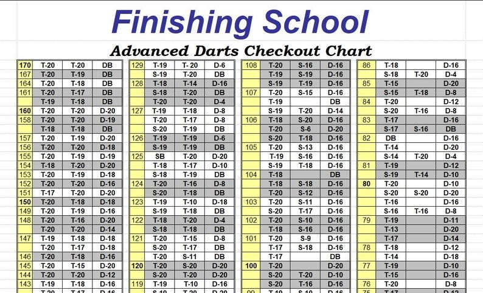

Hardwood · Personalizable
Wood Dart Case
Carry your darts with flights on, plus the spare parts you need for a night at the board.
From $74Shop on Etsy ↗
Real wood. Your game.
Handmade hardwood dart cases with a character all their own. Designed for your darts. Finished for the feel of real wood.
Independent workshop · Radford, Virginia
From the workshop
Dart-night essentials, personal gifts, and awards worth putting on the wall.
Carry your darts with flights on, plus the spare parts you need for a night at the board.

A small home for three assembled darts, with a threaded holder for a spare shaft and flight.

Contrasting hardwoods, cut designs, and personal wording for leagues, tournaments, and clubs.

Three-dart checkout routes with alternatives. PDF sizes and spreadsheet source files included.
Prices shown are a guide. Etsy has current availability, personalization costs, shipping, and final pricing. Darts pictured are not included. The checkout chart is a digital file, not a printed product.
Scratch-and-dent walnut cases with cosmetic imperfections. See the listing photos for details.

The original, thoughtfully made
Walnut, cherry, mahogany, or a mix of woods. Natural grain makes each case individual; personal engraving makes it unmistakably yours.
A closer look
Real pieces from the shop. Tap a photo to see more.
The person behind the wood
I made my first batch of dart cases in 1999. I still have one, and it's still going strong. The design has evolved in small ways, but the idea has stayed the same: a useful case you'll enjoy carrying.
After years of working with a CNC supplier, I brought the machining into my own workshop during the pandemic. More than a thousand cases later, my favorite moment is still rubbing in the oil and watching the wood come to life.
The name? A ruptured Achilles tendon put me on the couch long enough to figure out my first online store. Broken Limb stuck.
Read the shop story on Etsy ↗Let's make it personal
A name on a case. An award for your league. Start a conversation with Pat.